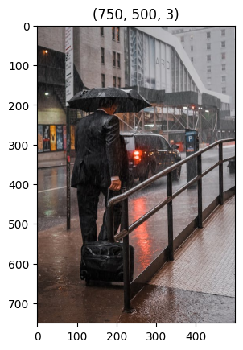

Instructions
We can skip the next cell if neural_de was installed from pip install.
[9]:
import sys
sys.path.append("..")
import time
print(sys.version)
3.9.21 | packaged by conda-forge | (main, Dec 5 2024, 13:51:40)
[GCC 13.3.0]
Let’s import from neural_de the rain removal method
[10]:
from neural_de.transformations.de_rain_enhancer import DeRainEnhancer
We load an example image
[11]:
import matplotlib.pyplot as plt
from pathlib import Path
import cv2
import os
start=time.time()
input_path = Path('../examples/images/street-rain-men.jpeg')
image = cv2.imread(str(input_path))
image = cv2.cvtColor(image, cv2.COLOR_BGR2RGB)
plt.title(image.shape)
plt.imshow(image)
[11]:
<matplotlib.image.AxesImage at 0x7fcb08239af0>

Enhancing an image
We create an instance of ResolutionShift :
Please note that this method require an access to MinIO in order to retrieve model’s weights (at least once, they will then be stored directly on the machine). Once the model is downloaded you can remove or comment the following cell.
[12]:
shifter = DeRainEnhancer()
[03-20 09:40:28] {/home/jovyan/Maturation/NeuralDE/examples/../neural_de/utils/twe_logger.py:123} INFO - Logger: name: neural_de_logger, handlers: [<StreamHandler stdout (DEBUG)>]
[03-20 09:40:28] {/home/jovyan/Maturation/NeuralDE/examples/../neural_de/transformations/de_rain_enhancer.py:55} INFO - Checking model availability...
[03-20 09:40:28] {/home/jovyan/Maturation/NeuralDE/examples/../neural_de/utils/model_manager.py:88} INFO - Model already available locally, skipping download
[03-20 09:40:29] {/home/jovyan/Maturation/NeuralDE/examples/../neural_de/transformations/de_rain_enhancer.py:74} INFO - Trained model GT-rain loaded
We apply the transform method to any number of images.
we can have multiple images per call of transform, and call transform multiple time with the same shifter.
for now, only ratio=2 is available for upsampling, as the underlaying transformer was trained for a 2x resolution.
[13]:
derained_images = shifter.transform([image])
[14]:
plt.figure(figsize=(10,7))
plt.subplot(1,2,1)
plt.title("Before")
plt.imshow(image)
plt.subplot(1,2,2)
plt.title("After")
plt.imshow(derained_images[0])
plt.show()
[15]:
end=time.time()
print("temps final : ",end-start)
temps final : 32.19397473335266
[ ]:
[ ]: